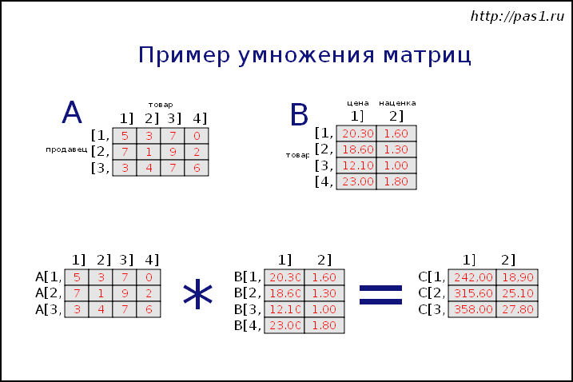

| Тема 2. Решение задач на матрицы. Язык Паскаль. | ||
| Назад | ||
|
Сумма элементов двумерного массива Найти сумму элементов матрицы.
Задача вычисления суммы элементов массива достаточно проста: все
элементы массива перебираются и добавляются в одну и ту же
переменную. Перебор элементов массива осуществляется в цикле Программа на языке Паскаль: Пример выполнения кода: Суммы элементов строк матрицы Вариант 1. Найти сумму элементов каждой строки матрицы (двумерного массива). Вариант 2. Вычислить сумму элементов определенной строки матрицы. Если поставлена задача вычислить сумму элементов каждой строки матрицы, то алгоритм ее выполнения таков:
Ниже в примере решения данной задачи заполнение матрицы, вывод элементов на экран и подсчет суммы выполняются внутри одного цикла. Это сделано не только для сокращения кода программы, но и для красивого вывода. После того, как выводятся элементы очередной строки, в конце этой же строки выводится их сумма. Пример выполнения: Если поставлена задача нахождения суммы элементов только определенной строки матрицы, то в решении используется только один цикл (без вложенного). Перебираются только элементы указанной строки. При этом меняется значение только второго индекса, а первый всегда постоянен - это номер строки.
Программа ниже усложнена тем, что пользователь сам определяет
номер строки матрицы, элементы которой необходимо
просуммировать. Если поставлена задача, в которой конкретно
задается строка, то вместо переменной num следует использовать
число, обозначающее номер строки. Например, для третьей строки
выражение Пример выполнения: Сумма элементов столбцов матрицы Вариант 1. Вычислить сумму элементов каждого столбца матрицы (двумерного массива). Вариант 2. Найти сумму элементов определенного столбца матрицы. Матрицу можно представить как массив, в который вложены другие массивы. Эти другие массивы имеют одинаковую длину (например, M), а количество этих вложенных массивов - другое число (например, N). Так, если M = 7, а N = 5, то это значит, что матрица состоит из 5 одномерных массивов, в каждом из которых по 7 элементов. Элементы одного вложенного массива обычно считают строкой матрицы. Столбцы же матрицы формируют элементы разных вложенных массивов, но имеющие в них одинаковые индексы (занимающие одинаковые позиции). Так, все первые элементы вложенных массивов, формируют первый столбец матрицы. Элементы с индексом 2 образуют второй столбец.
Если mat -
это переменная-матрица, то выражение Обычно матрицы заполняются построчно: во внешнем цикле перебираются строки, во внутреннем - элементы строк (формируют столбцы). Однако это не обязательно. Заполнять можно и по столбцам: во внешнем цикле перебирать столбцы, во внутреннем - обращаться к элементам разных вложенных массивов, но имеющих идентичный индекс. В программе ниже заполнение двумерного массива происходит построчно (стандартно), затем вычисляется сумма элементов каждого столбца, и здесь обход происходит по столбцам. Обратите внимание, что в данном случае внешний цикл отсчитывает до M, а внутренний - до N. В разных итерациях вложенного цикла различна первая переменная-индекс (в данном случае i), обозначающая номер строки, а столбец остается постоянным. Пример выполнения кода программы: Когда поставлена задача нахождения суммы элементов только определенного столбца, то она решается проще, без вложенного цикла. Вместо переменной j используется конкретное число, обозначающее столбец, сумму которого следует посчитать. Например, для вычисления суммы элементов третьего столбца код будет таким: Найти строку матрицы с максимальной суммой элементов В двумерном массиве (матрице) найти строку, сумма элементов которой является максимальной среди всех строк матрицы. Решения данной задачи, когда требуется найти только одну строку с максимальной суммой элементов и когда таких строк несколько и все их надо определить, несколько различаются. Рассмотрим сначала первый случай. Предположим, что в матрице суммы всех строк различны или для решения задачи достаточно найти первую с максимальной суммой. Пусть переменная sum_max хранит найденную максимальную сумму. Переменная row_max хранит номер строки, элементы которой дают в сумме максимум. Перебираем построчно матрицу. Перед вложенным циклом переменной sum (хранит сумму элементов текущей строки) присваиваем 0. Во вложенном цикле перебираются элементы текущей строки. Значение каждого из них добавляется к sum. После того, как сумма элементов текущей строки посчитана (вышли из внутреннего цикла), проверяем не больше ли она значения, хранимого в sum_max. Если больше, то записываем ее в sum_max, а переменной row_max присваиваем номер текущей строки (хранится в переменной i).
В конце программы выводим значения sum_max и row_max (она
содержит ответ задачи - номер искомой строки) на экран. В данном
случае будет найдена только первая строка с максимальной суммой.
Если бы в условном операторе использовался логический оператор Теперь обратимся ко второму случаю, когда надо определить все строки с максимальной суммой элементов, если таковых несколько. В данном случае следует использовать два отдельных перебора матрицы. В первом просто определяется максимум. Во втором на экран выводятся номера строк, сумма элементов которых совпала с ранее найденным максимальным значением. Пример выполнения программы: Найти индексы максимальных элементов матрицы В двумерном массиве (матрице) найти индексы (номера строк и столбцов) максимальных элементов. Описание переменных:
Алгоритм решения задачи: Первым этапом решения данной задачи является поиск значения максимального элемента матрицы. Для этого переменной max сначала присваивается самое минимальное из возможных значений, после этого каждый элемент матрицы сравнивается со значением max. Если текущий элемент больше, то значение max перезаписывается на него. Поиск максимума можно выполнить в том же цикле, в котором происходит заполнения матрицы. Допустим, задача усложнена тем, что
Если бы требовалось просто вывести индексы первого попавшегося (или единственного) максимального элемента, то достаточно было бы перебрать матрицу, сравнить каждый элемент с ранее найденным максимальным значением. Как только совпадение было бы найдено, вывести на экран значения i и j. После чего прервать выполнение цикла. Поскольку нужно запомнить индексы максимумов, то в программу вводится дополнительный двумерный массив (матрица) id. Каждая его строка состоит всего из двух элементов, в которых будут храниться номера строки и столбца найденного максимума. Количество строк массива id должно быть таким, чтобы была возможность записать в него индексы всех элементов заданной матрицы, если вдруг все они окажутся максимальными. Однако маловероятно, что все элементы матрицы будут максимальными. Поэтому массив id не будет заполнен полностью. Чтобы отслеживать сколько строк этого массива заполнено (т. е. сколько максимумов найдено), вводится переменная qty. Итак, перебираем заданную матрицу построчно. Если очередной элемент равен значению max, то увеличиваем на 1 значение qty, а в id в его строку с номером qty записываем индексы i и j найденного максимума. В конце программы выводим значения заполненных ранее ячеек массива id. Программа на языке Паскаль: Пример выполнения программы определения индексов максимальных элементов матрицы: Максимальные элементы столбцов матрицы Найти максимальный элемент для каждого столбца матриц размерностью N строк M столбцов. При переборе элементов матрицы по столбцам во внешнем цикле изменяется второй индекс, а во внутреннем - первый. Перед внутренним циклом предполагается, что первый элемент столбца двумерного массива - максимальный элемент данного столбца. Во внутреннем цикле, если обнаруживается, что текущий элемент больше уже найденного максимального, то значение переменной перезаписывается на него. Найденный максимум сразу выводится на экран или может быть сохранен в отдельном одномерном массиве, размерность которого соответствует количеству столбцов матрицы. Пример выполнения программы: Поменять местами строки матрицы Дана матрица (двумерный массив). Поменять местами две любые ее строки. Пусть строки, которые требуется поменять местами задаются пользователем при выполнении программы. Обменять строки - это значит, каждый элемент одной строки надо поставить на то же место другой строки. При обращении к элементу матрицы первым индексом указывается строка, вторым - столбец. Поскольку строки задаются, проход осуществляется по столбцам. Для каждого столбца элемент одной строки присваивается буферной переменной, после чего на его место записывается элемент того же столбца другой строки. На место второго элемента записывается первый, взятый из буферной переменной. Пример выполнения кода: Отсортировать в матрице столбцы по убыванию значений элементов в первой строке Отсортировать в матрице столбцы по убыванию значений элементов в первой строке. Данную задачу можно понять так:
См. сортировка выбором. Можно использовать метод пузырька. Отличие данной задачи в том, что цикл сортировки включает перестановку всех элементов очередного столбца матрицы. Найти максимальный элемент диагонали Найти максимальный диагональный элемент и указать его координаты в главной диагонали матрицы. Также решить задачу для побочной диагонали матрицы. Элементы главной диагонали имеют одинаковые индексы. Поэтому перебрать эту диагональ и найти максимальный элемент проще. Поскольку надо вывести еще и индексы наибольшего элемента, то в переменной-максимуме следует запоминать индекс (один, так как второй такой же).
Для побочной диагонали индексация немного сложнее, однако второй
индекс зависит от первого и в Паскале определяется по формуле Пример выполнения программы: Количество отрицательных элементов под главной диагональю матрицы Определить количество отрицательных элементов квадратной матрицы, расположенных под ее главной диагональю. Главная диагональ матрицы идет из левого верхнего угла в нижний правый. Пусть индексом i обозначаются номера строк, а j - номера столбцов (константами N и M обозначим количество строк и столбцов соответственно). У элементов главной диагонали значение этих индексов равно между собой. У элементов ниже главной диагонали значение i будет меняться от 2 до N, а значение j от 1 до i-1. Пример выполнения кода: Найти минимальный элемент матрицы ниже побочной диагонали В квадратной матрице найти минимальный элемент ниже побочной диагонали. Вывести на экран в табличном виде исходную матрицу и отдельно часть матрицы ниже побочной диагонали.
Побочная диагональ матрицы идет от верхнего правого угла до
нижнего левого. Пусть N -
это размерность квадратной матрицы, i -
это номер строки, а j -
номер столбца (или номер элемента в строке). Тогда, если
перебирать построчно матрицу, то элемент, стоящий на побочной
диагонали будет иметь индекс
Таким образом можно сделать вывод, что все элементы в конкретной
строке от побочной диагонали и до конца строки имеют индексы от
Учитывая то, что сама диагональ нас не интересует, следует в
каждой строке первым брать не элемент диагонали, а следующий за
ним. Следовательно, формула первого элемента строки после
побочной диагонали будет иметь вид
Для того, чтобы вывести часть матрицы ниже побочной диагонали
так же, как она располагается в выводе всей матрицы, надо
заполнить строку пробелами в количестве, соответствующем
количеству невыведенных элементов. Так, в примере ниже, на
каждый элемент отводится 5 знакомест. Количество невыведенных
элементов каждой строки равно Сам поиск минимума - это самая легкая часть задачи. При выводе элементов, расположенных ниже побочной диагонали, их заодно можно проверять, не меньше ли они уже найденного минимума. Программа на языке Паскаль: Пример выполнения: Заполнить двумерный массив по правилу Заполнить двумерный массив по следующему правилу: 1 2 3 4 5 2 1 2 3 4 3 2 1 2 3 4 3 2 1 2 5 4 3 2 1 Перед решением задачи необходимо найти правило расположения чисел в данной матрице. Можно увидеть несколько:
Под каждую описанную выше закономерность можно составить программу. Однако она будет достаточно сложной. Вместо этого обратим внимание на следующее.
Таким образом, приходим к формуле Результат выполнения программы: Умножение матриц Три продавца продают четыре вида товаров. Количество проданного товара сведено в таблицу A. В таблице B представлены цена каждого товара и комиссионные (наценка), получаемые от продажи.

Вырученные от продажи деньги подсчитываются так:
А полученные комиссионные так: Эти вычисления называются умножением матриц и записываются так, как представлено на рисунке выше. Число столбцов таблицы A должно совпадать с числом строк таблицы B. Результирующая таблица C имеет столько строк, сколько у A, и столько столбцов, сколько у B. Следующая программа вводит матрицы A и B, перемножает их, затем выводит их произведение – матрицу C. Программа на языке Паскаль:
|
||
| Конспект подготовлен Бакулиным А. М. 2022 год. | ||